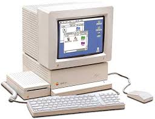

Der Apple II
Der Apple II war einer der ersten marktreifen Computern.
Der von Steve Wozniak entwickelte und von Steve Jobs vermarktete Computer,
verkaufte sich in den 16 Jahren rund 2 Millionen mal. Jedoch gab es auch schon damals
Apple Nacharmer, so gibt es auch eine große Dunkelziffer.
Erstmals konnte man verschiedene Erweiterrungen anschließen, z.B.
Modems, Grafikkarten, Soundkarten und sogar Prozessorkarten.
Diese große popularität ist warscheinlich auch der großen Zahl an Viedeospielen zu verdanken.
Zudem gab es für den Apple II auch innovative Office Pogramme.
Die geschriebenen Texte wurden meißt auf einer Diskette gespeichert.
Im Apple II kam eine 8-Bit 6502-CPU mit 1,020 MHz Taktfrequenz zum Einsatz.
In der Grundausstattung verfügte er über 4 KB RAM, erweiterbar bis 64 KB, in den späteren Modellen auf bis zu 16 MB ausbaubar.
Eingebaut war auch einbe Tastertur, ohne Sonderzeichen. Außerdem konnte man keine Kleinbuchstaben Schreiben.
Er konnte gerademal 16 Farben darstellen.

Mehr erfährst du hier
zurück zur Startseite
Nach Oben